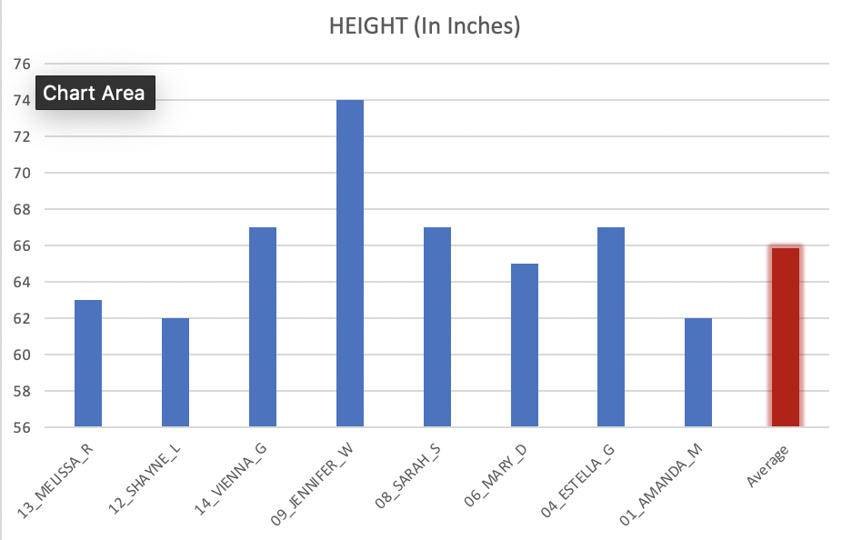
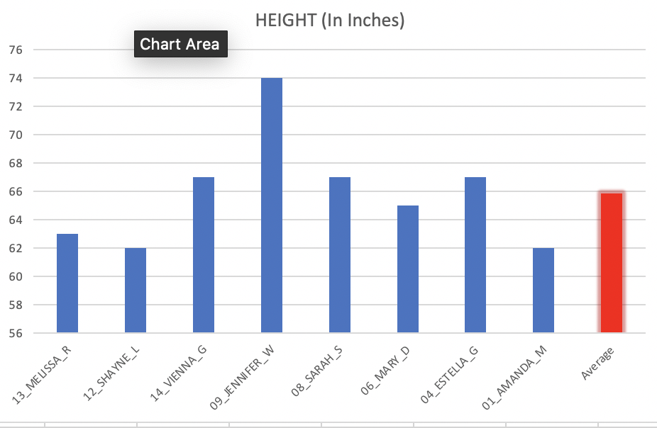

There are a lot of attractive qualities about people. When it comes to what people look for in others, it comes down to personal preference. One of these, especially for women, is height. When it comes to height, men and women usually tend to be pretty specific. Using data from the Bachelor and Bachelorette (Github and imdb), we are able to see some trends in data, specifically that the variance for height in men is much tighter than that of women, as well as having a high average for height for both men and women as compared to the national average.
When looking at the men on the Bachelor, right away, we can see that all of the men are really, really tall. According to the CDC, Men age 20 and up are, on average, 5 feet and 9 inches. Looking at the men on screen, we see most of them are much taller, with a man standing 5 feet and 9 inches actually being “shortest Bachelor to ever appear on the show” (ScreenRant). Looking at the diagram stated below, we can see some of the heights of the winners of the Bachelorette. Seven out of the Nine men depicted show that, although it has been converted into only inches, are above 6 feet tall. Looking at the average height between these men, we see that the average height is just over 6 feet and ½ an inch, this is much bigger than the average height of a normal man. Because most of the men picked on bachelorette are picked because of how attractive they are, this goes to show some of women’s beauty standards.
In addition to the mean of the Bachelorette winners being higher than the national average man, the variance within the group is pretty stable. Men who won the bachelorette are consistently close to the average, as compared to the graph of the women below. This is an interesting finding, because it may suggest that women consistently like men who are taller than the national average as compared to men, who probably do not care as much. However, making a full claim without looking at other possible variables wouldn’t make sense, so it could be a result of something else. Still interesting to speculate about though.
Finally, we look at the women of the Bachelor. We see that in this show, not only is there a pretty large difference between each individual, but also that the difference between the average woman’s height on the bachelor and the national average isn’t that large. Coming in close to 5 feet and 6 inches, the women on the Bachelor, on average, are not much taller than the national average for women, 5 feet and 4 inches.
All in all, the data on the Bachelor and Bachelorette help give insight on the preferences of some men and women, as illustrated by the media. Because both of these are television shows, it makes sense to find people that the audience finds attractive. Although this gives some insight on the preferences of men and women, there are several different ways to improve on this study. First and foremost, getting more data about the winners could be useful. Admittedly, the data was limited as some of the heights for the winners were not displayed, so this may have affected the accuracy of the showings. This resulted in dropping the seasons where there wasn’t any data. Further, this allowed one of the seasons to be mismatched, as Bachelor Season 11 and Bachelorette Season 14 had no data on their winner’s height. A better study would have included all of the data of not only the winners of each season, but also every contestant that has played so far. In addition, using more complex statistical tools, like an Analysis of Variance and t tests, to have a better understanding of the data would likely be helpful.